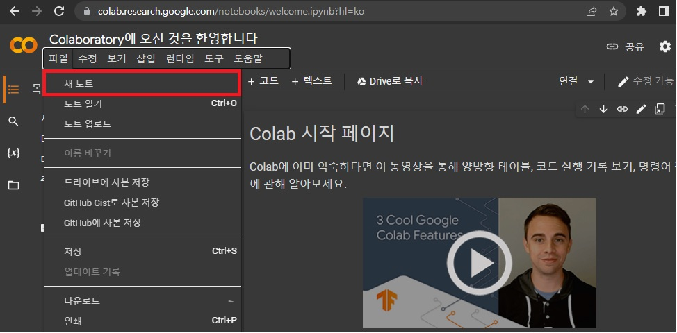

Hello Python
본 강의 자료는 Google Colab 를 통해 브라우저 내에서 Python 스크립트를 작성하고 실행하는 것을 가정에서 진행 됩니다.
Colab 소개
Colaboratory를 줄여서 Colab이라고 합니다. 학생이든, 데이터 과학자든, AI 연구원이든 Colab으로 업무를 더욱 간편하게 처리할 수 있습니다. 브라우저에서 작성 및 실행함으로 언제 어디서든 코딩을 할 수 있습니다.
IDLE 소개
Python IDLE 이란 Integrated Development and Learning Environment의 약자로, 파이썬 1.5.2B1 이후 언어의 디폴트 구현과 함께 묶여온 파이썬을 위한 통합 개발 환경입니다. python IDLE은 GUI 툴로, 파이썬을 사용하기 쉽게 해줍니다.
IDLE(아이들)은 단순한 IDE를 지향하며, 특히 교육 환경에서 초보자에게 적합합니다.
1) 구문 강조, 자동 완성, 스마트 들여쓰기 등이 포함된 다중 창 텍스트 편집기
2) 구문 강조된 파이썬 쉘
3) stepping, breakpoint, call stack을 볼 수 있는 통합 디버거
위 3개가 주요기능입니다.
Colab "Hello Python"
Colaboratory에 접속하면 Colab 시작 페이지가 나오는데 여기서 왼쪽 상단에 보이는 파일을 눌러 '새 노트'를 눌러 새로운 페이지를 연다.
그러면 이러한 페이지가 나오는데 여기서 빨간 박스 안에 있는 셀에 print("Hello Python") 을 치고 왼쪽에 셀 실행 버튼을 누르면 아래와 같은 출력값이 나온다.
이때 왼쪽에 셀 실행 버튼을 누르지 않더라도 Shift + Enter를 누르면 버튼을 안누르고도 실행 시킬 수 있고 새로운 코드를 입력 가능한 셀이 나오게 된다.
IDLE "Hello Python"
이번에는 IDLE 설치부터 'Hello Python' 출력까지 해보겠습니다. IDLE Python 에 들어가면 아래와 같은 화면이 뜹니다. 여기서 빨간 박스 안에 있는 버튼을 눌러줍니다.
버튼을 눌러 다운로드를 받은 후
이러한 화면이 뜨는데 밑에 보이는 체크 박스를 모두 체크하시고 'Install Now'를 눌러주세요. 그러면 설치가 시작됩니다.
설치가 끝났으면 이러한 화면이 뜨는데 'Close'를 눌러 종료해 주시면 됩니다.
화면 왼쪽 하단 윈도우 로고 옆에 보이는 돋보기에 IDLE이라고 치시면 이러한 화면이 나오는데, 실행시켜주시면 됩니다.
실행하시면 이러한 창이 뜨는데 저기에 print("Hello Python") 입력하시고 Enter를 눌러주시면 아래와 같은 결과가 나옵니다.

이번 강의는 여기서 마치도록 하겠습니다.